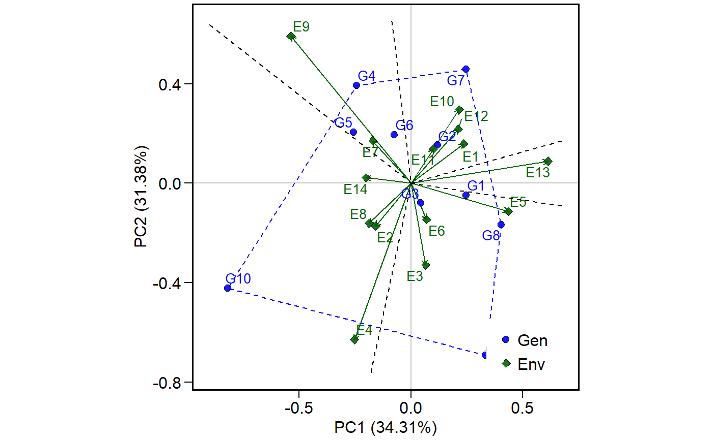
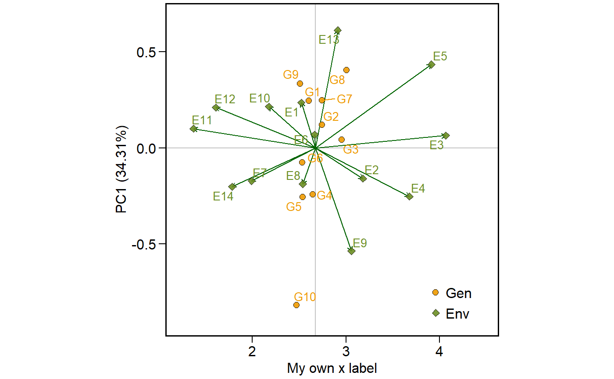

Plot scores in different graphical interpretations
plot.scores.RdPlot scores of genotypes and environments in different graphics. 1 = PC1 x PC2, 2 = GY x PC1, 3 = GY x WAASB, and 4 = Nominal yield x EPCA1.
# S3 method for scores plot(x, type = 1, polygon = FALSE, file.type = "pdf", export = FALSE, file.name = NULL, theme = theme_waasb(), axis.expand = 1.1, width = 8, height = 7, x.lim = NULL, x.breaks = waiver(), x.lab = NULL, y.lab = NULL, y.lim = NULL, y.breaks = waiver(), shape.gen = 21, shape.env = 23, size.shape = 2.2, size.bor.tick = 0.3, size.tex.lab = 12, size.tex.pa = 3.5, size.line = 0.5, size.segm.line = 0.5, leg.lab = c("Gen", "Env"), line.type = "solid", line.alpha = 0.9, col.line = "gray", col.gen = "blue", col.env = "darkgreen", col.alpha = 0.9, col.segm.gen = "transparent", col.segm.env = "darkgreen", resolution = 300, ...)
Arguments
| x | The object |
|---|---|
| type | Three types of graphics can be generated: |
| polygon | Logical argument. If |
| file.type | The type of file to be exported. Valid parameter if |
| export | Export (or not) the plot. Default is |
| file.name | The name of the file for exportation, default is |
| theme | The graphical theme of the plot. Default is `theme = theme_waasb()`. Please, see `?WAASB::theme_waasb`. An own theme can be applied using the arguments: `theme = theme_waasb() + theme(some stuff here)`. For more details, please, see `?ggplot2::theme` |
| axis.expand | Multiplication factor to expand the axis limits by to enable fitting of labels. Default is |
| width | The width "inch" of the plot. Default is |
| height | The height "inch" of the plot. Default is |
| x.lim | The range of x-axis. Default is |
| x.breaks | The breaks to be plotted in the x-axis. Default is |
| x.lab | The label of x-axis. Each plot has a default value. New arguments can be inserted as |
| y.lab | The label of y-axis. Each plot has a default value. New arguments can be inserted as |
| y.lim | The range of x-axis. Default is |
| y.breaks | The breaks to be plotted in the x-axis. Default is |
| shape.gen | The shape for genotype indication in the biplot. Default is |
| shape.env | The shape for environment indication in the biplot. Default is |
| size.shape | The size of the shape (both for genotypes and environments). Default is |
| size.bor.tick | The size of tick of shape. Default is |
| size.tex.lab | The size of the text in the axes text and labels. Default is |
| size.tex.pa | The size of the text of the plot area. Default is |
| size.line | The size of the line that indicate the means in the biplot. Default is |
| size.segm.line | The size of the segment that start in the origin of the biplot and end in the scores values. Default is |
| leg.lab | The labs of legend. Default is |
| line.type | The type of the line that indicate the means in the biplot. Default is |
| line.alpha | The alpha value that combine the line with the background to create the appearance of partial or full transparency. Default is |
| col.line | The color of the line that indicate the means in the biplot. Default is |
| col.gen | The shape color for genotypes. Must be one value or a vector of colours with the same length of the number of genotypes. Default is |
| col.env | The shape color for environments. Default is |
| col.alpha | The alpha value for the color. Default is |
| col.segm.gen | The color of segment for genotypes.Default is |
| col.segm.env | The color of segment for environments. Default is |
| resolution | The resolution of the plot. Parameter valid if |
| ... | Other arguments of the function |
Details
The plots type 1 and 2 have the same interpretation than those used in traditional-usage AMMI analysis (well know as AMMI2 and AMMI1, respectively). In the plot type 3, the scores of both genotypes and environments are plotted considering the response variable and the WAASB (stability index that considers all significant principal component axis of traditional AMMI models or all principal component axis estimated with BLUP-interaction effects. Plot type 4 may be used to better understand the well known "which-won-where" pattern, facilitating the recommendation of appropriate genotypes targeted for specific environments, thus allowing the exploitation of narrow adaptations.
See also
Examples
library(METAAB) library(ggplot2) scores = WAASB(data_ge, resp = GY, gen = GEN, env = ENV, rep = REP)#> Done!# PC1 x PC2 plot.scores(scores$GY, type = 1, polygon = TRUE)# GY x PC1 plot.scores(scores$GY, type = 2, col.env = "olivedrab", col.gen = "orange2", x.lab = "My own x label")# GY x WAASB plot.scores(scores$GY, type = 3, size.tex.pa = 2, size.tex.lab = 16)